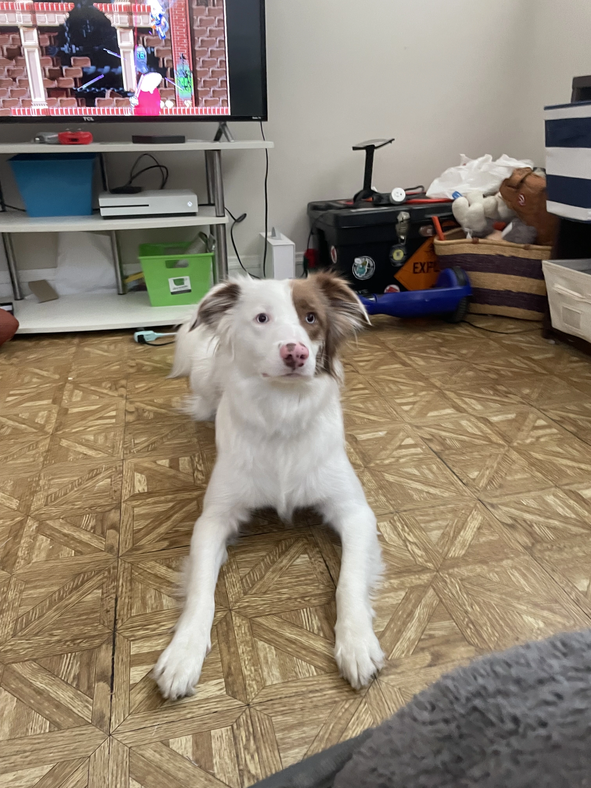
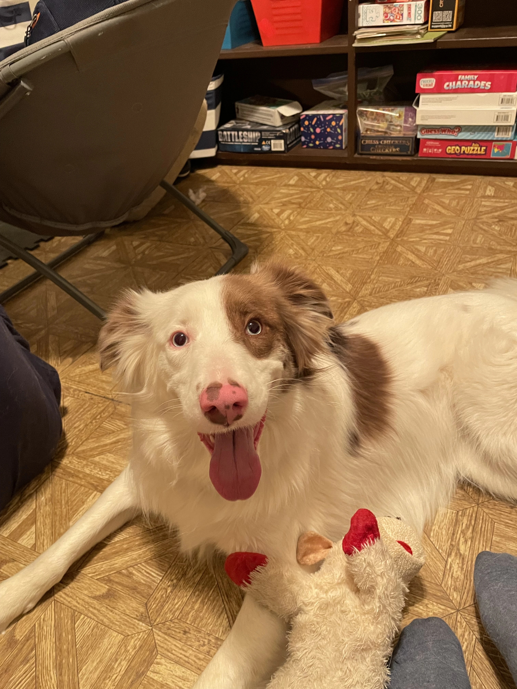
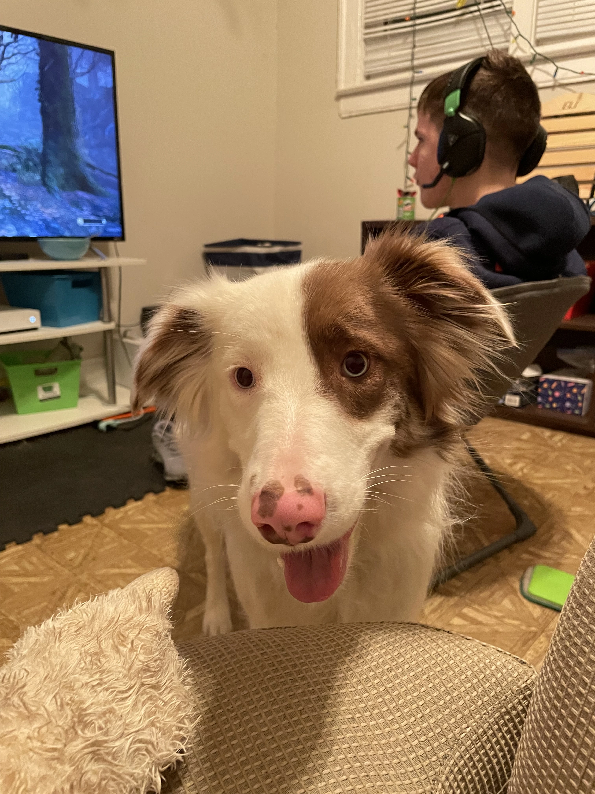
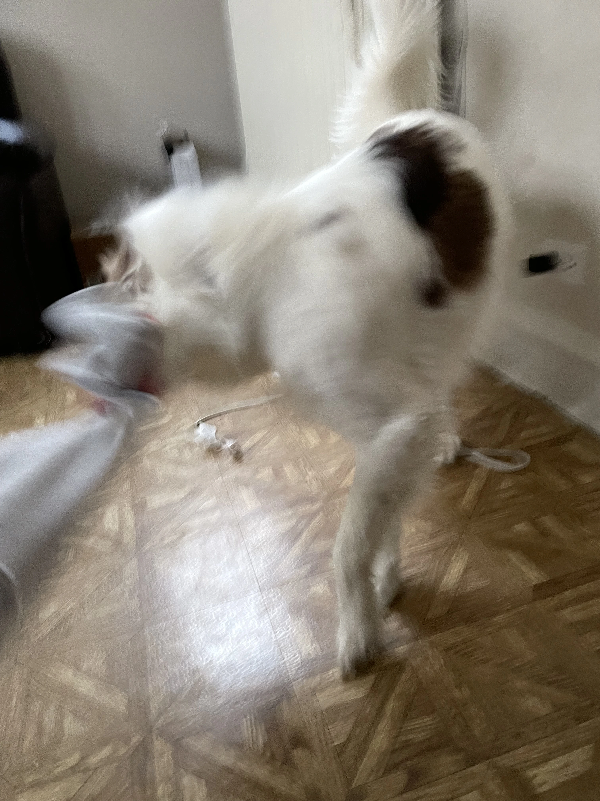
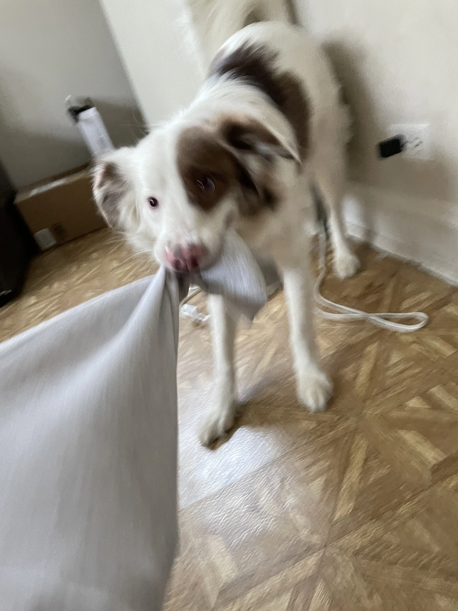
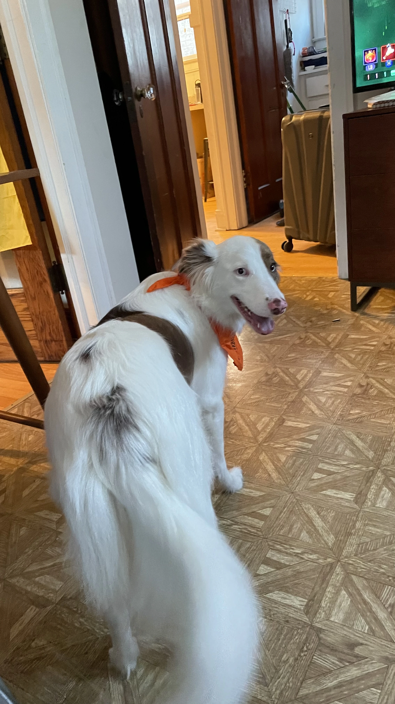
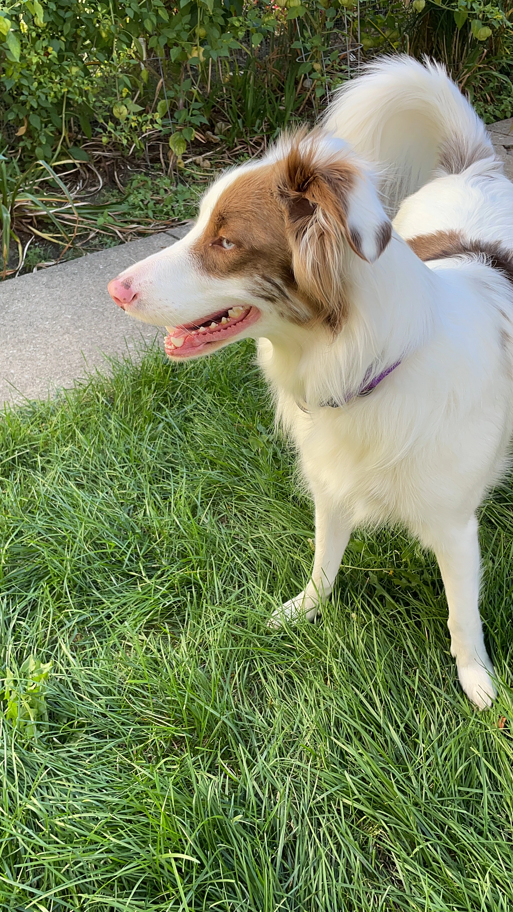

There are many reasons why I like to be here. For starters, I can enjoy a close proximity to a post office, a park, and a multitude of stores. Despite these great reasons for living here, I find two things to be the main factors for why I enjoy living in Jefferson Park: My friends and the transportation.
I have many friends who live nearby. We tend to hang out and play video games. Whether it be a stroll in the park, a late night game of Payday 2, or playing with pets, there is always something for us to do. One of my friends Kuba, who lives closer to Wilson Park, normally plays Payday 2 with me in the evenings after school, and we walk in the park when the weather is nice and warm. My other friend Eli, who lives on my block, has an Australian Shepherd we run with, we play video games on his Xbox, and mess around with his younger brother. I have many fond memories of hanging around with them, and below are some photos and a video of Zoey the Aussie.







The nearby transportation center allows me to quickly catch trains and buses that I otherwise wouldn't be able to if I lived elsewhere. Additionally, there is a Mayfair Metra Milwaukee District North stop only a 10 minute drive away from the Jefferson Park Transportation Center. This means that if I miss a train at Jefferson Park or vice versa, I can always go to the other stop. This enables me to take the MD-N Metra, then the UP-NW Metra if I miss the first train, and then the CTA Blue Line if I miss the previous two. Not only that, if I somehow manage to miss the two Metra trains, and the CTA Blue Line is inoperable, I can drive to school as the highway is close.
With the convenient travel in my neighborhood, and with my awesome friends who live nearby, living here has been very pleasant. Granted there have been some hiccups here and there, but I find that to be with every neighborhood. At the end of the day, I feel that my neighborhood enabled me to become the person I am. Moreover, this neighborhood has given benefits to the needy and provided for more than just the average and "normal" person by going above and beyond with projects and community service. I truly believe that when I go to college I will reminisce upon the fond memories I made while living in Jefferson Park. Thank you for letting me share my story with you!